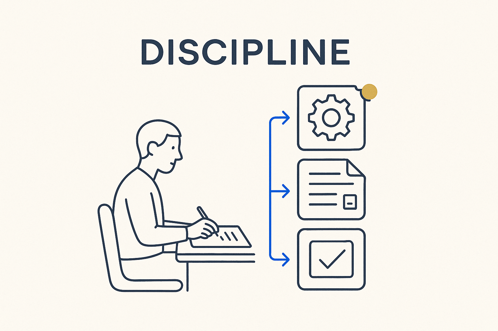

The habit of doing the structured thing every time — writing the minutes, versioning the decision, keeping the model current — because reliable automation is built on reliable practice.

> The habit of doing the structured thing every time — writing the minutes, versioning the decision, keeping the model current — because reliable automation is built on reliable practice.
Discipline is the unglamorous engine under the whole approach. Not motivation, not a burst of effort — the quiet habit of doing the structured thing *every time*: writing the precise minutes, versioning the decision, keeping the model in sync, capturing the note before it evaporates. It is boring on any single day and decisive over a year, because structure only pays back if it is maintained without heroics.
It is also the precondition for automation. AI can prepare the meeting, generate the SQL and answer the auditor’s question — but only from output that was captured consistently. One reliable habit (minutes always written, decisions always logged) is worth more than one more clever notation, because it is what the machine runs on. Install the habit and the leverage follows; skip it and the smartest tooling has nothing solid to stand on. (See *The Power of Habit* — the point is to make the structured move automatic, not effortful.)
The pair to hold: discipline is what makes integrity real over time, and data discipline is this same habit turned onto the standards and conventions that make generation deterministic.
Where it lives: the attitude layer of Breakthrough Modeling — the habit that makes the leverage possible.